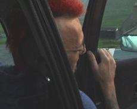

DETOUR SUIVI DE JOVAN FROM FOULA
Pierre Creton & Vincent Barré | Frankreich 2005 | 30 Min.
Format: MiniDV
Material: MiniDV
Originalsprache: Englisch , Französisch
Drehbuch: Pierre Creton, Vincent Barré
Kamera: Pierre Creton, Vincent Barré
Schnitt: Pierre Creton, Vincent Barré
Ton: Pierre Creton, Vincent Barré
Produktion: Atlante Productions
Deutsche Erstaufführung
Der erste gemeinsame Film von Creton und Barré ist ein filmisches Dyptichon: „Détour“ ist das Gegenteil einer Postkartensammlung: Der Film zeigt in einer Serie Aufnahmen einer unmarkanten Landschaft, Variationen von Hügeln und Wiesen der Shetlandinsel, in denen das Pittoreske stets abwesend ist. Der zweite Teil „Jovan from Foula“, ein Roadmovie, begleitet den jungen Punk Jovan über die Isle of Foula. Ein Essay über das Suchen und Verschwinden im Leben.
Pierre Creton, geb. 1966, lebt und arbeitet als Filmemacher, Bildhauer und Milchkontrolleur in Vattetot-sur-Mer. Er studierte an der Kunsthochschule in Paris Bildhauerei.
Vincent Barré, geb. 1948, lebt und arbeitet in Paris und im Loiret als Bildhauer. Er studierte Architektur in Paris und Philadelphia und bereiste Europa, Amerika und Asien. Seit 1986 unterrichtet er an der Kunsthochschule in Paris Bildhauerei.
Filme (P. Creton): Une saison, La tournée, La vie après la mort (Kurzfilme) 2002 | Secteur 545 2004 | Le voyage à Vézelay 2005
Gemeinsame Filme: Détour suivi de Jovan from Foula 2005 | L’Arc d’Iris – Souvenir d’un jardin 2006
zurück
|